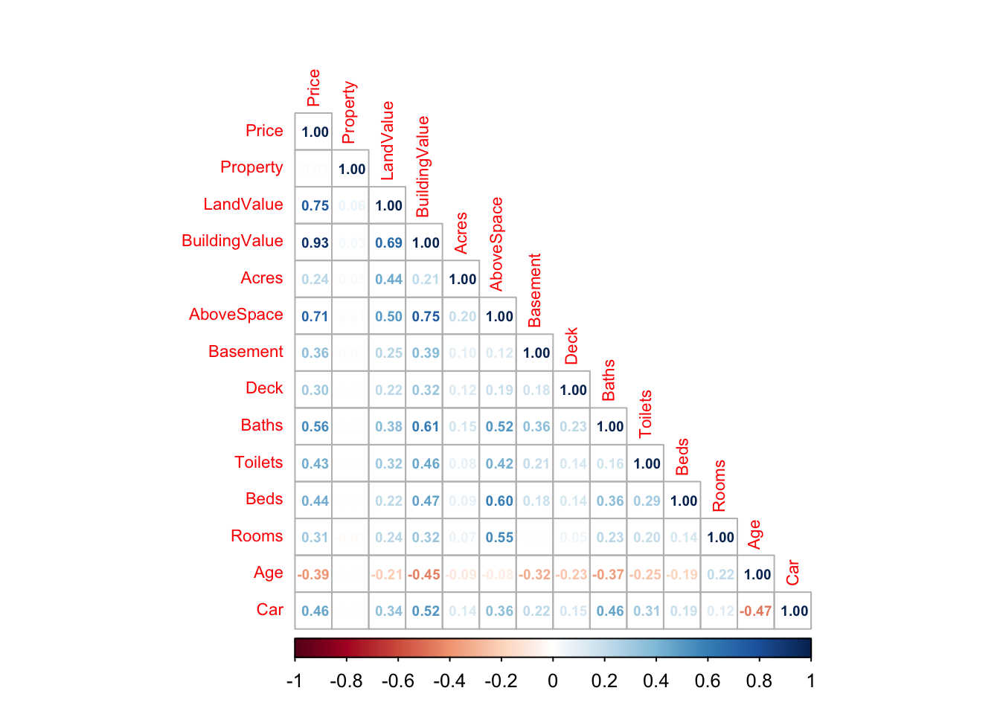
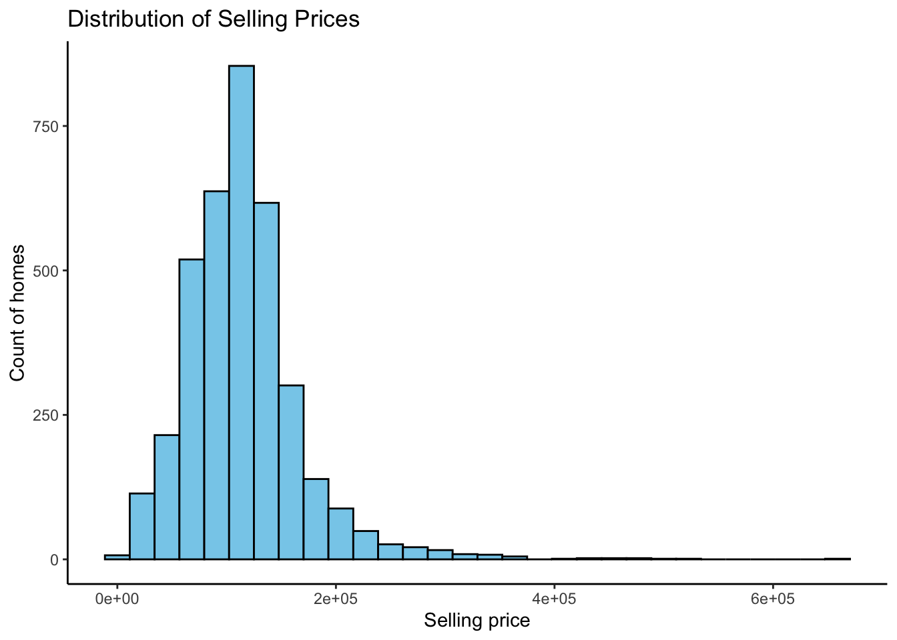
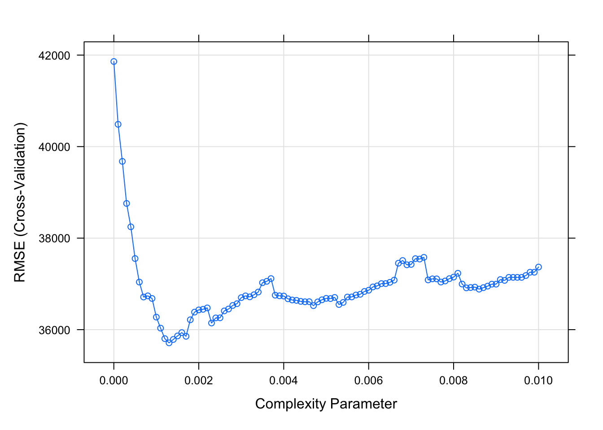
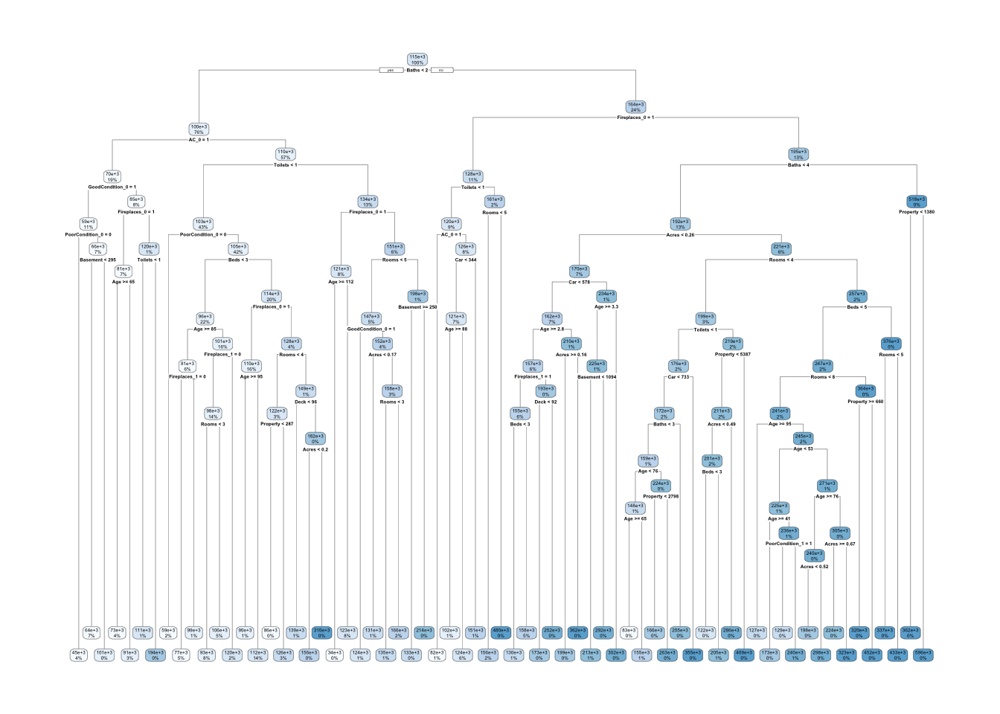
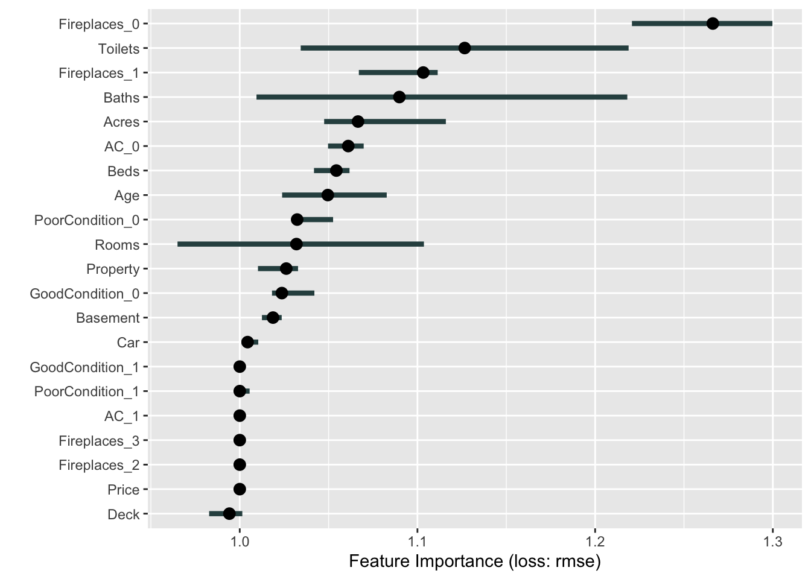
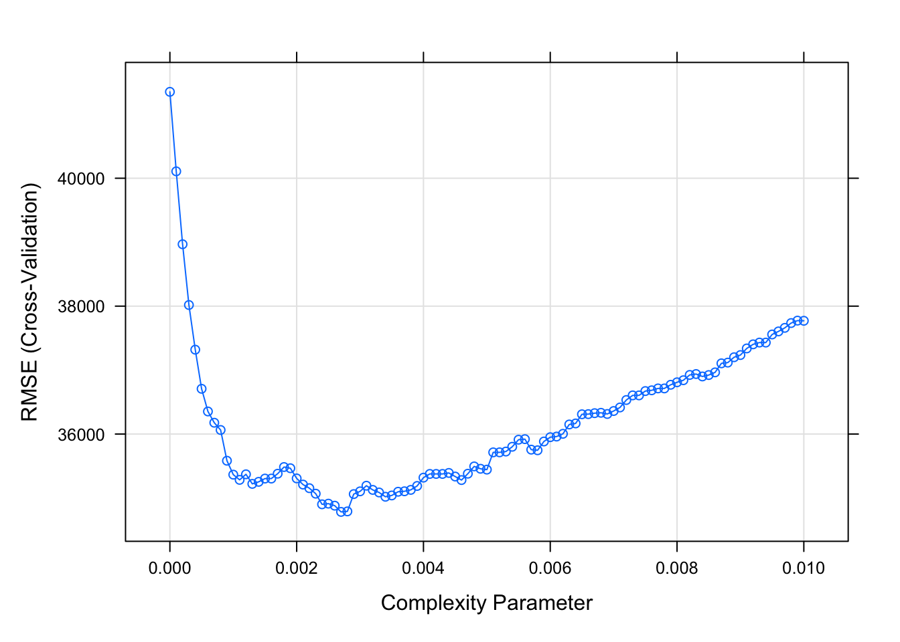
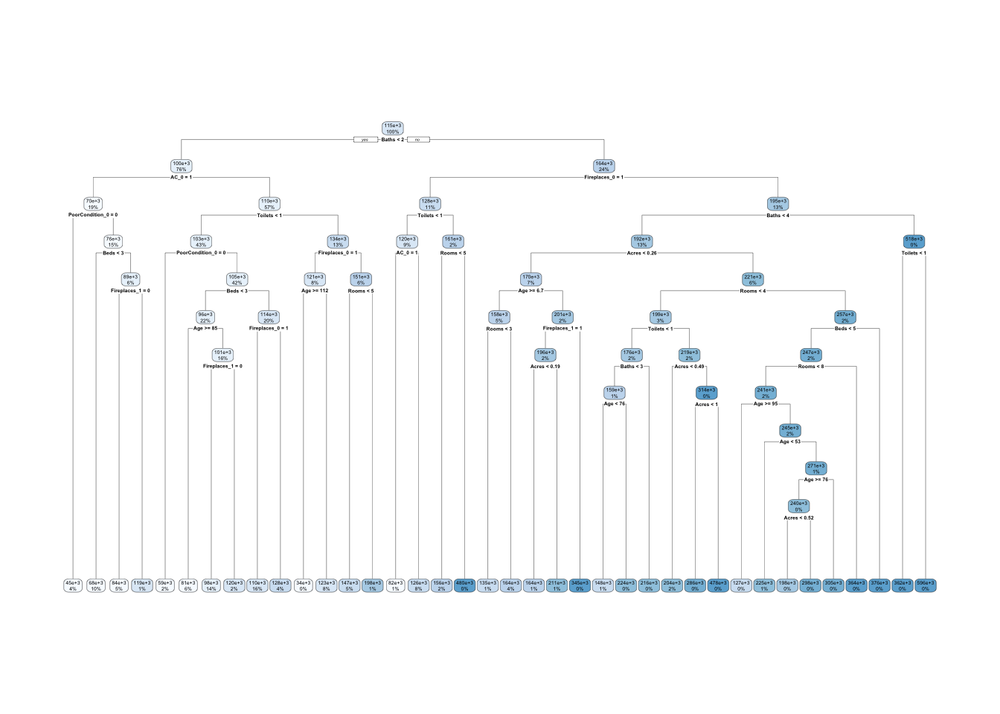

rm(list = ls())
library(tidyverse)
library(caret)
library(glmnet)
library(rpart)
library(pROC)
library(ggthemes)
library(AppliedPredictiveModeling)
library(performanceEstimation)
library(dummy)Problem Set #7
Part 1
LHBA’s big-picture business problem is to use supervised data to help predict selling prices of homes. What features are playing roles in determining such prices? How are the different datasets showing a significance when market conditions are always changing?
Part 2
Are the locations of these homes also being included and used as a factor to determine predictions of selling prices in the datatset?
How much does it cost to generally flip a home? What cost are involved and how much time is it going to take to complete the overall process?
Upgrading features within a home is a common thing. With that being said, will updates on home upgrades also be included along with the dataset?
Part 3
LHBA’s business problem is the need to predict the selling prices of homes. As we approach this problem as a regression problem, we can use this supervised dataset to tune and develop a model to help with predicting home prices. We can view error and evaluate the model, also known as RMSE, to determine the performances of the developed predictions. This RMSE shows us the average distance between predicted values from the model to the actual values in the dataset. As we see error, we can determine whether we should use such models or if we need to continue tuning them. Error represents uncertainty within a model. As we build a model and find error, we can then end it off with visualizing such uncertainty.
Part 4
In order to help develop predictions for our business problem, we need to tune a model that best fits our data. As we aim to develop small values of error within our model, we can have that “data science” to rely on as we aim to make decisions and prediction of prices for homes.
We will not be using these models determine absolute prices for there are some important features that affect the prices of homes that are not in the dataset.
These predictions will help use determine where and how we could possibly advertise certain homes. Finding a proper target audience that fits not just home features, but also income, community, and so many other features that do not revolve around a home is the easiest way to a successfully achieving the business problem.
Part 5
We will start off by making sure each of our steps are explained and that they connect and have relation to the target solution. Being able to understand the data being used is also important when trying to provide a solution. We will begin with deciding on which features we would like to have. Features such as house size, number of rooms, bathrooms, appliances, age of home, neighborhood, location, and crime rate would be perfect examples for providing our solution. As we rely on data, trying to get such desired features in our datasets would be the goal.
We will determine what features and data is present and being covered and will then prepare our data. We will start by cleaning the data and remove and edit features we may find relevant to finding a solution and then create new datasets by combining data from multiple sources. We will then re-format our data in a way that will help provide our solution before building and tuning models that will then assess and evaluate such decisions.
Part 6
post = read_csv("PostCrisisCV.csv")Rows: 1657 Columns: 18
── Column specification ────────────────────────────────────────────────────────
Delimiter: ","
dbl (18): Property, LandValue, BuildingValue, Acres, AboveSpace, Basement, D...
ℹ Use `spec()` to retrieve the full column specification for this data.
ℹ Specify the column types or set `show_col_types = FALSE` to quiet this message.pre = read_csv("PreCrisisCV.csv")Rows: 1978 Columns: 18
── Column specification ────────────────────────────────────────────────────────
Delimiter: ","
dbl (18): Property, LandValue, BuildingValue, Acres, AboveSpace, Basement, D...
ℹ Use `spec()` to retrieve the full column specification for this data.
ℹ Specify the column types or set `show_col_types = FALSE` to quiet this message.on_market = read_csv("OnMarketTest-1.csv")Rows: 2000 Columns: 18
── Column specification ────────────────────────────────────────────────────────
Delimiter: ","
dbl (18): Property, LandValue, BuildingValue, Acres, AboveSpace, Basement, D...
ℹ Use `spec()` to retrieve the full column specification for this data.
ℹ Specify the column types or set `show_col_types = FALSE` to quiet this message.merged_data = merge(post, pre, all = TRUE)
merged_fct = merged_data %>%
select(-Price, -Property, -LandValue, -BuildingValue, -Acres, -AboveSpace, -Basement, -Deck, -Baths, -Toilets, -Beds, -Rooms, -Age, -Car) %>%
mutate_all(.funs = factor)
merged_num = merged_data %>%
select(Price, Property, LandValue, BuildingValue, Acres, AboveSpace, Basement, Deck, Baths, Toilets, Beds, Rooms, Age, Car)
merged_data = bind_cols(merged_num, merged_fct)merged_data %>%
keep(is.numeric) %>%
cor() %>%
corrplot::corrplot(., method = "number", type = "lower", number.cex = 0.6, tl.cex = 0.7)
merged_data = merged_data %>%
select(-BuildingValue, -LandValue, -AboveSpace)merged_data %>%
ggplot(aes(Price)) +
geom_histogram(color = "black", bg = "skyblue") +
labs(title = "Distribution of Selling Prices",
x = "Selling price",
y = "Count of homes") +
theme_classic()`stat_bin()` using `bins = 30`. Pick better value with `binwidth`.
merged_dum = dummy(merged_data, int = TRUE)
merged_num = merged_data %>%
keep(is.numeric)
merged_data = bind_cols(merged_num, merged_dum)
rm(merged_dum, merged_num)#Partition Data
set.seed(123)
idx = createDataPartition(merged_data$Price, p = 0.8, list = FALSE)
train = merged_data[idx, ]
test = merged_data[-idx, ]
rm(idx)train_model = train(Price ~ .,
data = train,
method = "rpart",
trControl = trainControl(method = "cv", number = 10),
tuneGrid = expand.grid(cp = seq(0.0, 0.01, 0.0001)),
control = rpart.control(minbucket = 1)
)
plot(train_model)
library(rpart.plot)
rpart.plot(train_model$finalModel)
library(iml)
library(patchwork)
tree_predictor = iml::Predictor$new(train_model,
data = test,
y = test$Price)
tree_imp = iml::FeatureImp$new(tree_predictor, loss = "rmse", compare = "ratio")
plot(tree_imp)
tree_imp$results %>%
filter(importance > 1) feature importance.05 importance importance.95 permutation.error
1 Fireplaces_0 1.2207100 1.266226 1.299777 44498.53
2 Toilets 1.0343090 1.126590 1.218834 39591.35
3 Fireplaces_1 1.0670219 1.103266 1.111387 38771.70
4 Baths 1.0094141 1.089840 1.218106 38299.86
5 Acres 1.0474995 1.066549 1.115988 37481.37
6 AC_0 1.0496945 1.061062 1.069745 37288.53
7 Beds 1.0417803 1.054364 1.061769 37053.17
8 Age 1.0238457 1.049559 1.082720 36884.28
9 PoorCondition_0 1.0311803 1.032313 1.052531 36278.20
10 Rooms 0.9649791 1.031915 1.103644 36264.25
11 Property 1.0102540 1.026174 1.032801 36062.48
12 GoodCondition_0 1.0181497 1.023707 1.041996 35975.78
13 Basement 1.0124812 1.018716 1.023605 35800.39
14 Car 1.0011205 1.004414 1.010416 35297.78train_new = dplyr::select(train, Fireplaces_0, Toilets, Fireplaces_1, Baths, Acres, AC_0, Beds, Age, PoorCondition_0, Rooms, Price)
new_tree = caret::train(Price ~ .,
data = train_new,
method = "rpart",
trControl = trainControl(method = "cv", number = 10),
tuneGrid = expand.grid(cp = seq(0.0, 0.01, 0.0001)),
control = rpart.control(minbucket = 1)
)
plot(new_tree)
rpart.plot(new_tree$finalModel)
train_error = postResample(predict(new_tree, train), train$Price)[["RMSE"]]
cv_error = min(new_tree$results$RMSE)
test_error = postResample(predict(new_tree, test), test$Price)[["RMSE"]]
data.frame(
"Error Source" = c("Training", "Cross-Validation", "Testing"),
"RMSE" = c(train_error, cv_error, test_error)
) Error.Source RMSE
1 Training 28746.09
2 Cross-Validation 34783.00
3 Testing 36510.79